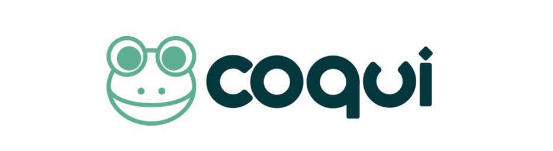

Project Background
Overview
As our main task is to develop a voice banking app using TTS software and a working connected front end, it is intuitive to think of the languages Python or Java for the backend and to use an MFC or .NET C++ front end framework considering the aim to get the app to the windows store. TTS software we could use include; COQUI, Real-Time-Voice-Cloning and Mary TTS.
To pick a language or framework for further development, we need to consider what would be best to use for implementation of our software. We need to consider multiple aspects including but not limited to, performance, accessibility and language tools.
This article aims to discover, evaluate and analyse the benefits and drawbacks of using different TTS software and using Python vs Java for our project before attempting to argue that Python and COQUI will be the most suitable choice.
Technical Research
Languages
First and foremost, we need to pick a reliable language for our project. Choosing an optimal language would provide us with reliable code, guarantee simplicity and performance. As such, we will compare the benefits of using Python or Java for this project.
Python: Simple and consistent- Due to the complexity associated with machine learning and AI, python allows developers to write concise and readable code allowing the developer to put most their time and effort into solving complex problems rather than being fixated on the nuances on the language.
Extensive selection of libraries and frameworks- Python has an extensive amount of libraries and frameworks then can make implementing complex algorithms more time efficient (1).
Flexibility- The language is very flexible. It offers a choice of using object-oriented programming or scripting. Developers can see changes quickly as there is no need to re compile. This also decreases the possibility of errors as programmers can work in a comfortable environment and check results quickly (2).
Java: Simplicity- Java is a very popular language, which is used a lot in the programming world. It is object-oriented which allows the code to be readable and organised. This is helpful for developers and java can be less complex to learn than other languages such as C++.
Security- Java is safer than many other languages as it doesn’t use pointers. Pointers can cause serious harm by allowing unauthorised memory access. Java provides a security management feature and overall has a secure framework (3).
Language Comparison
There are numerous similarities between both Python and Java. They are both popular languages with strong communities and a good amount of libraries. However, in general most developers prefer to use Python for AI and machine learning due to its simple nature, accessibility and ease of use. Java may have a better performance than Python but Python is easier to code with, especially for beginners, it’s easily adaptable and is better suited for quick prototyping.
Given these reasons, as a team we have decided to use Python over Java for implementing our software.

Text-to-Speech Software
In addition, we need to pick a TTS software that we could use to create the backend of our app. We looked at three types of software; COQUI TTS, Real-Time-Voice-Cloning and Mary TTS.
Coqui TTS: Coqui TTS (Text to speech) is a library for advanced Text-To-Speech generation. It is an open source project and comes with pre-trained models as well as being already used in multiple projects. Some of its features include having high-performing deep learning models; being fast and efficient; having detailed training logs and being flexible and easy to use (4). It is a neural network-based TTS system that can generate natural-sounding speech from text input in multiple languages. Coqui uses python and a key advantage to this is that it has a high accuracy rate and is highly customisable, allowing users to be able to adjust voice pitch, speaking rate and volume. Moreover, Coqui is also faster than other speech synthesis tools, generating speech in real-time, which makes it ideal for specific applications.
Real-Time-Voice-Cloning: Voice cloning is becoming increasingly more popular as technology advances. It is a process to create a digital copy of your voice using AI technology, and this technology then recreates your voice in order for it to speak what you need from the text that’s been written. This is an efficient way to accurately capture someones voice and it can be used for many different purposes. An example would be an app that read books in a celebrities voice (5). Pros to using this software is that production time and costs are decreased and the user has a larger amount of control over the process. However, there can be a lack of tone and emotion, causing the voice to sound slightly robotic (6).
Mary TTS: MaryTTS is an open-source Text-to-Speech (TTS) synthesis platform that is written in Java. It is a flexible and customisable engine, which has the ability to support different languages and voice types. TTS (Text-to-Speech) synthesis is when one converts written text into spoken speech. The technology enables devices to produce speech that sounds human. The process of TTS synthesis has several steps (7). Its popularity is mainly due to the numerous amounts of languages and voices which are available as open sources and are free to use. This means that production costs are lower.
TTS Software Comparison
Overall, after gathering extensive amounts of information on all of three softwares, Coqui TTS seems to have the best potential for our project. Not only does it help that it is implemented in Python, which is our chosen language, it is also the most efficient and easy to use software. Its applications are aligned to our project goals and we believe this to be the most useful tool.

Front-End
CAN CHANGE
As a result of our clients request, we will use an MFC framework for the front end of the application. In addition to this, our project is part of the Motion Input group at UCL and all these apps are made with an MFC framework, thus this is what our team will use.
The MFC framework is based on a few major classes and several Visual C++ tools. It provides an object-oriented wrapper over much of the Win32 and COM APIs (8). It can be used to create simple desktop applications as well as being very helpful in creating more complex applications. This makes it a useful tool for our application. Another benefit of using this framework is that it is compatible with older windows computers. This is helpful for our project as people who would be using our application are likely to be older, less technically proficient and potentially own older devices.